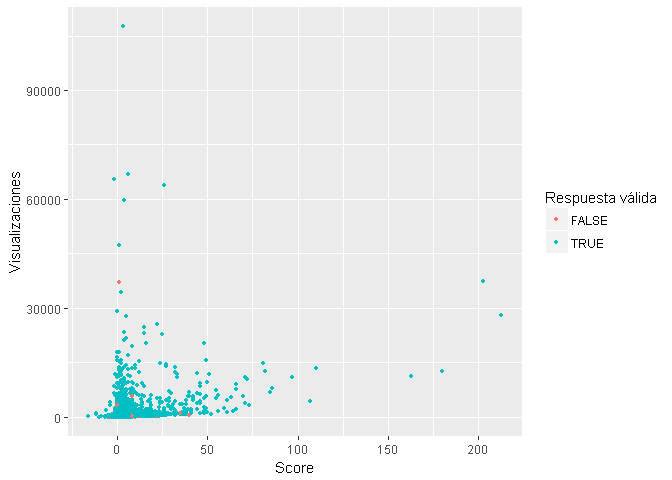
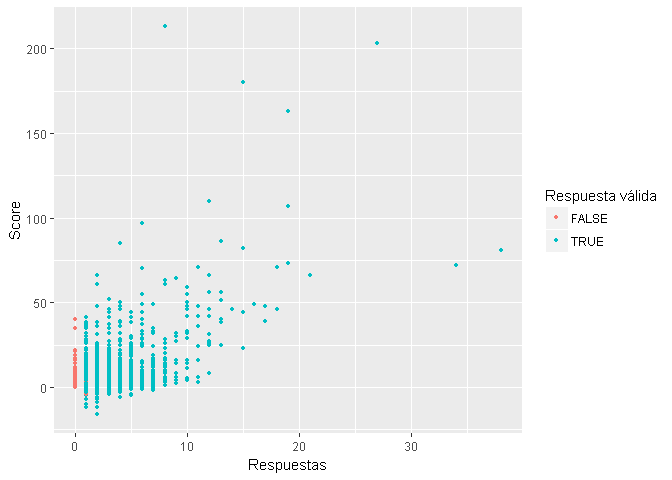
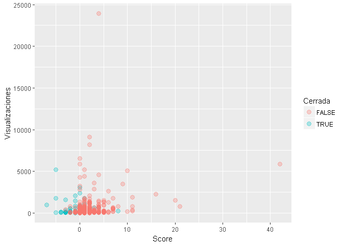
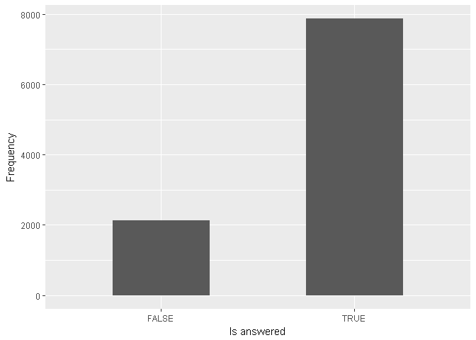
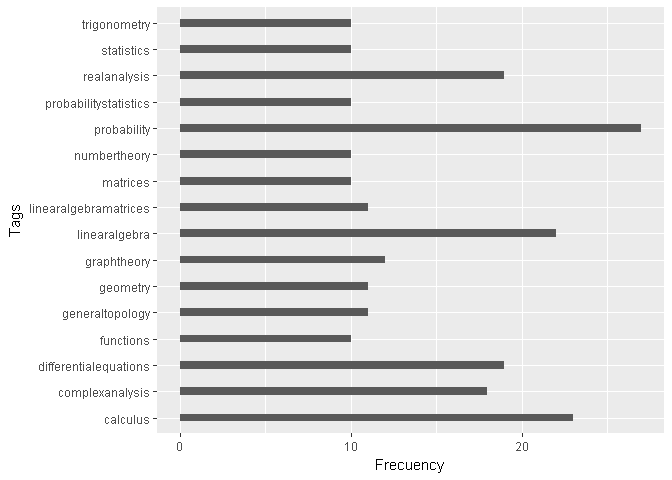
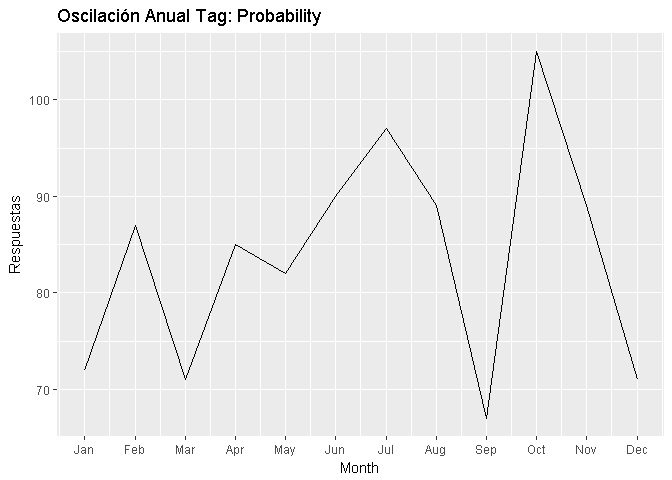
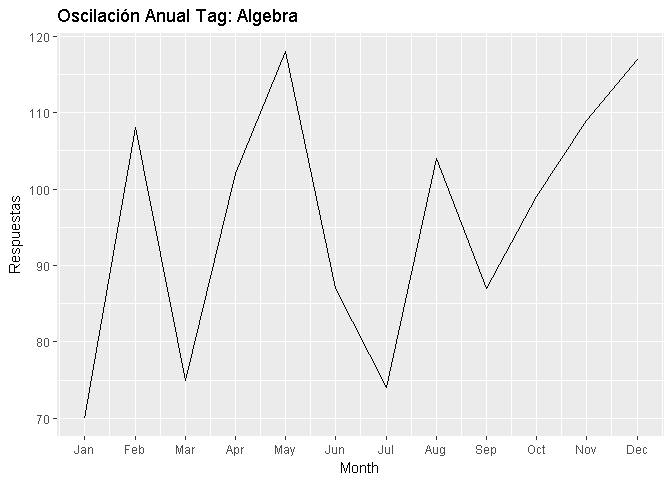
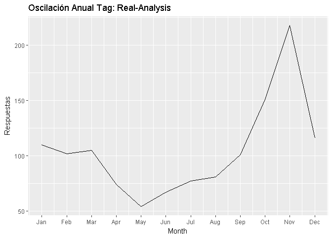
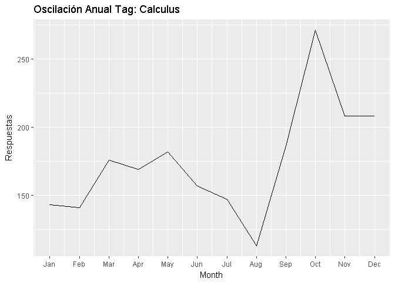
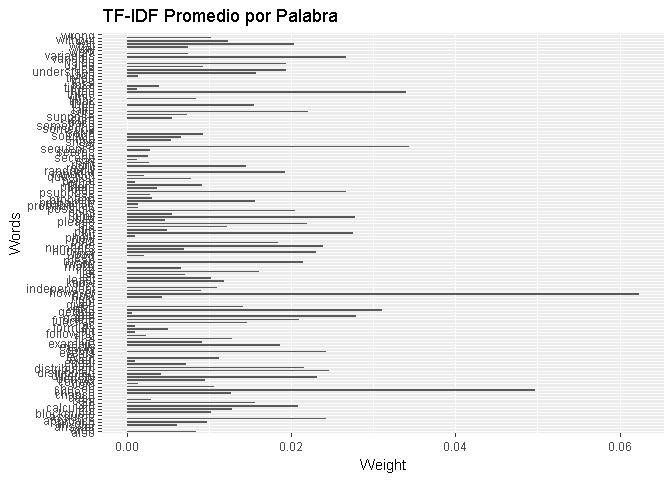

Introducción y Motivación
El desarrollo integral del estudiante de matemática se basa en la investigación y recopilación de información adicional a la estudiada en clases, llegar a profundizar un tema puede ser muy sencillo hoy en día con el acceso a internet, pero a medida que el estudiante avanza en su carrera empieza a dificultarse la búsqueda y recopilación de información dado a la complejidad de las asignaturas, en algunos casos surgen problemas de mayor dificultad que obligan a buscar ayuda profesional y en este caso salen a relucir sites o foros donde personas del área comparten dudas y conocimiento, en particular está el caso de math.stackexchange.com, en el cual los usuarios participan en dicho intercambio de información. Este website resulta una herramienta útil para todo tipo de personas, además, es pública, gratuita y de fácil manejo, en él se hacen en promedio dos preguntas por minuto, y el tiempo promedio en obtener una respuesta es de 10 min, lo cual lo convierte en una fuente confiable para obtener respuestas a dudas emergentes, al menos para quien busca tener una idea de hacia dónde va dirigido el problema. Con mas de 1.372.2971 preguntas y mas de 7.015.119 usuarios, math.stackexchange.com se ha convertido en una herramienta útil no solo para estudiantes de matemáticas puras si no para cualquier estudiante cuya carrera este ligada con esta ciencia.
El equipo esta interesado en determinar a traves de modelos de clasificacion y mineria de texto, si una pregunta hecha en el sitio tiene probabilidades de ser cerrada luego de una revisión, ya sea por estar mal redactada, ser un duplicado de otra pregunta, etc. Además se quiere predecir el Score de una pregunta, la idea es identificar preguntas con baja calidad y hacer seguimiento de las mismas.
Los Datos
El proceso de obtención de los datos se realizo mediante el uso de la API de stackexchange.com y la biblioteca stackr desarrollada por David Robinson, todo el codigo y documentación asociada se encuentra en el siguiente enlace StackMath. Inicialmente hacemos un llamado a la API para obtener la informacion general del sitio a traves de la función stack_info():
| new_active_users | total_users | badges_per_minute | total_badges | total_votes | total_comments | answers_per_minute | questions_per_minute | total_answers | total_accepted | total_unanswered | total_questions | api_revision |
|---|---|---|---|---|---|---|---|---|---|---|---|---|
| 13 | 7018726 | 4.88 | 22382243 | 99426156 | 67742828 | 4.72 | 2.99 | 21638022 | 7417895 | 3892004 | 13728707 | 2017.4.21.25514 |
Toda la manipulación y limpieza de los datos se hizo usando las bibliotecas dplyr,tm,stringr. Se transformo el cuerpo de texto de cada pregunta en texto tratable: se eliminaron los signos de puntuaci{on, se removieron los números y palabras que no aportan información al modelo (stopwords). El resultado del preprocesamiento es una matriz Término-Documento, la función peso que consideramos fue TF-IDF Weight:
| score | can | find | how | image | sure | use | assume |
|---|---|---|---|---|---|---|---|
| 0 | 0.0607136 | 0.1016902 | 0.1316089 | 0.1896077 | 0.1617314 | 0.1361541 | 0.0000000 |
| 1 | 0.0094063 | 0.0000000 | 0.0000000 | 0.0587517 | 0.0000000 | 0.0210943 | 0.0297108 |
| 1 | 0.0000000 | 0.0000000 | 0.0000000 | 0.0000000 | 0.0000000 | 0.0587332 | 0.0000000 |
| 0 | 0.0000000 | 0.0000000 | 0.0000000 | 0.0000000 | 0.0000000 | 0.0000000 | 0.0000000 |
| 1 | 0.0000000 | 0.0000000 | 0.2068139 | 0.0000000 | 0.0000000 | 0.0000000 | 0.0000000 |
Puede observarse en la tabla anterior que en el caso de la tarea de clasificación fue necesario discretizar la variable “score”, usamos el siguiente criterio: \[ score>0 \Rightarrow score = 1\]
\[ score<0 \Rightarrow score = -1\] \[ score = 0 \Rightarrow score = 0\]
Análisis Exploratorio
Relaciones entre las variables númericas

Comparación entre preguntas con respuesta válida y sin respuesta
## Warning: Ignoring unknown parameters: binwidth, bins, pad
¿ Cuál es el Tag mas frecuente dentro de las preguntas sin respuesta ?
El análisis muestra que en el 2015 el Tag mas frecuente dentro de las preguntas sin respuesta valida es “probability”

Exploración mediante series temporales
Definición. Una serie de tiempo es un conjunto de observaciones xt, cada una registrada a un tiempo específico t.
Componentes de una serie temporal
El análisis clásico de las series temporales se basa en la suposición de que los valores que toma la variable de observación es la consecuencia de tres componentes, cuya actuación conjunta da como resultado los valores medidos, estos componentes son:
Componente tendencia. Se puede definir como un cambio a largo plazo que se produce en la relación al nivel medio, o el cambio a largo plazo de la media. La tendencia se identifica con un movimiento suave de la serie a largo plazo.
Componente estacional. Muchas series temporales presentan cierta periodicidad o dicho de otro modo, variación de cierto período (semestral, mensual, etc.). Por ejemplo las Ventas al Detalle en Puerto Rico aumentan por los meses de noviembre y diciembre por las festividades navideñas. Estos efectos son fáciles de entender y se pueden medir explícitamente o incluso se pueden eliminar de la serie de datos, a este proceso se le llama desestacionalización de la serie.
Componente aleatoria. Esta componente no responde a ningún patrón de comportamiento, sino que es el resultado de factores fortuitos o aleatorios que inciden de forma aislada en una serie de tiempo. De estos tres componentes los dos primeros son componentes determinísticos, mientras que la última es aleatoria. Así se puede denotar la serie de tiempo como
Xt = Tt + Et + ot
donde Tt es la tendencia, Et es la componente estacional y ot es la componente aleatoria.

En la gráfica de la serie temporal se analizó el comportamiento de las preguntas y respuestas acerca de probabilidades, en la cual se observa un comportamiento regular, con picos en enero a febrero, asociados al inicio de actividades academicas a nivel global, con tendencia a subir en junio y julio justo antes de los periodos vacacionales, mostrande el decrecimiento mas importante justo entre julio y agosto (periodo vacacional) y un alza importante entre septiembre y agosto, justo donde se reinician las actividades académicas nuevamente.

Tal como se observa en la gráfica, las preguntas y respuestas de álgebra tiene un comportamiento regular, alcanzando su máximo entre abril y mayo, con un bajón importante de mayo a julio y luego su tendencia es a subir. Podemos inferir que de este tópico siempre hay dudas durante el año.

Gráficamente se observa que las preguntas y respuestas de análisis real no muestran picos importantes durante el año, alcanzando sus niveles mas bajos entre marzo y mayo, con el único pico importante justo al inicio de actividades académicas entre septiembre y octubre.

En esta gráfica observamos que el comportamiento de la serie temporal asociado a las preguntas y respuestas de cálculo se mantienen como se esperaba, constantes entre febrero y mayo, disminuyendo entre junio y agosto, (período vacacional globalmente) mostrando un incremento muy importante al inicio de actividades académicas en los meses de agosto a octubre, en la cual su tendencia fue a subir.
Machine Learning
Para esta tarea se realizo el tratamiento de los datos antes descrito y además se uso una división del conjunto de datos en subconjunto de entrenamiento (70%) y subconjunto de prueba (30%).
Métricas para la evaluación del rendimiento de los modelos
\[Sensitivity= \dfrac{TP}{TP+FN}\]
\[Specificity = \dfrac{TN}{TN+FP} \] \[Accuracy = \dfrac{TP+FN}{TP+FN+TN+FP} \] \[RMSE = \sqrt{\dfrac{1}{N}\sum (Obs-Pred)^2} \]
Clasificación de preguntas según el Score:
Se tomaron en cuenta dos algoritmos de clasificación:
- SVM (Support Vector Machine)
- NaiveBayes ( Naive Bayes Ingenuo)
library(e1071)
model.svm ##
## Call:
## svm(formula = questions.training$score ~ ., data = questions.training,
## kernel = "polynomial", class.weights = c(`-1` = 0.0235, `0` = 0.2018,
## `1` = 0.7747), cost = 1000, degree = 10)
##
##
## Parameters:
## SVM-Type: C-classification
## SVM-Kernel: polynomial
## cost: 1000
## degree: 10
## gamma: 0.009433962
## coef.0: 0
##
## Number of Support Vectors: 6816pred.svm = predict(model.svm, question.testing)
table(question.testing$score,pred.svm,dnn=c("Obs","Pred"))## Pred
## Obs -1 0 1
## -1 5 15 55
## 0 11 51 511
## 1 31 182 2139library(e1071)
train <- sample(1:10000,7000)
test <- sample(c(1:10000)[-train],3000)
naive.questions <- naiveBayes(x= as.matrix(questions_dtm)[train,], y = questions_mining$score[train])
pp <- predict(naive.questions,question.testing)
table(pp, questions_mining$score[test],dnn=c("Obs","Pred")) ## Pred
## Obs -1 0 1
## -1 14 126 471
## 0 12 82 382
## 1 51 359 1503Predicción del Score de una pregunta
Se tomo en cuenta el algoritmo svm como máquina de regresión.
library(e1071)
model.svr ##
## Call:
## svm(formula = fmla, data = questions.2000.training, cost = 0.01,
## cross = 10)
##
##
## Parameters:
## SVM-Type: eps-regression
## SVM-Kernel: radial
## cost: 0.01
## gamma: 0.007518797
## epsilon: 0.1
##
##
## Number of Support Vectors: 1310rmse <- function(error)
{
sqrt(mean(error^2))
}
rmse(error)## [1] 2.769857Además de considerar el RSME como medida de rendimiento del modelo, en este caso establecimos que un margen optimo para nuestro problema es de 1.5, es decrir, \[ |error|\leq 1.5.\] Con un cálculo bastante sencillo se concluye que el modelo “predice” el Score de una pregunta dentro de este margen en un 79.5% de los casos.
count = 0
for(i in 1:600){
if (abs(error[i]) <= 1.5){count = count + 1}else{count = count}
}
count ## [1] 467Clasificación de preguntas Cerradas
Se tomaron en cuenta 3 algoritmos de clasificacion: -SVM (Support Vector Machine) -NaiveBayes (Naive Bayes Ingenuo) -C5.0 (Arbol de Decisión)
train.sample <- sample(1:1189,832)
test.sample <- sample(c(1:1189)[-train.sample],357)
closed.svm##
## Call:
## svm.default(x = closed.training, y = vector.class[train.sample],
## type = "one-classification", kernel = "polynomial", degree = 7,
## nu = 0.4, cachesize = 200, cross = 10)
##
##
## Parameters:
## SVM-Type: one-classification
## SVM-Kernel: polynomial
## degree: 7
## gamma: 0.008
## coef.0: 0
## nu: 0.4
##
## Number of Support Vectors: 781table(pred.test,vector.class[test.sample])##
## pred.test FALSE TRUE
## FALSE 275 48
## TRUE 26 8 ## tree.model <- C5.0(x= closed.training, y = as.factor(vector.class[train.sample]), trials = 20)
table(p ,as.factor(vector.class[test.sample]))##
## p FALSE TRUE
## FALSE 285 54
## TRUE 16 2# naive.closed.model <- naiveBayes(x = closed.training , y = vector.class[train.sample] , data = closed.train)
table(p1, vector.class.2[test.sample])##
## p1 F T
## FALSE 222 41
## TRUE 79 15ggplot(medias, aes(x = rownames(medias),y = colMeans(tabla))) + geom_bar(stat = "identity", width = 0.5) + coord_flip() + xlab("Words") + ylab("Weight") + ggtitle("TF-IDF Promedio por Palabra")